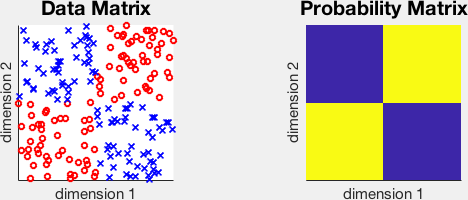

class: center, middle name:opening ## Lifelong Learning Forests .center[ Joshua T. Vogelstein, Cencheng Shen, Randal Burns, Carey E. Priebe <br> [jovo@jhu.edu](mailto:jovo at jhu dot edu) | <http://brainx.io/L2F> <br><br><br> <img src="images/logo_jhu.png" STYLE="HEIGHT:100px;"/> ] --- ## Goals of this Talk - Provide some learning theory background - Motivate our strategy - Explain intuition behind our strategy - Everyone in room understands Please ask questions! --- <img src="images/L2M_hava.png" style="width: 100%;"/> --- ### A motivating example: psychopathy - .blue[truth]: this guy is a psychopath - .blue[sample]: psychopath index is high - .blue[action]: kill him, keep him in jail, or release him - .blue[loss]: cost of jailing - .blue[risk]: false positives are quite bad! Goal: release people if they are not "too" dangerous -- But then.... - .blue[truth]: cured of psychopathy - .blue[sample]: new index, now says low - .blue[action]: can start treatment - .blue[loss]: cost of treatment - .blue[risk]: treating people that don't get better is not so bad Goal: Can the judge (.blue[learner]) updates her ruling? --- ### Statistical Decision Theory | object | space | definition | |:--- |:--- | | $\xi \sim P_\xi$ | $\Xi$ | .blue[true] latent state | | $z \leftarrow h(\xi)$ | $ \mathcal{Z}$ | noisily .blue[sampled] state | $a$ | $\mathcal{A}$ | possible .blue[actions] | $g: \mathcal{Z} \to \mathcal{A}$ | $\mathcal{G}$ | decision rule | $\ell(g(x), a) \to \mathbb{R}_+$ | $\mathcal{L}$ | .blue[loss] function | $f_n: \mathcal{Z}^n \times \mathcal{L} \to \mathcal{G}$ | $\mathcal{F}$ | .blue[learner] | $\mathbb{R} [ \ell (\hat{g}(x; f_n), a)]$ | $\mathcal{R}$ | .blue[risk] functional - Let $\varepsilon_n = \mathbb{R}[f_n] - \mathbb{R}^{*}$ be the .blue[residual] - Goal: choose $f_n$ such that for many $P \in \mathcal{P}$, $\varepsilon_n \rightarrow 0$ --- ## Lifelong Learning - At $t=T$, any of the following may change: $P, h, \mathcal{X}, \mathcal{A}, \ell, \mathbb{R}$ - Goal: choose $f_n$ such that for many $P \in \mathcal{P}$ <!-- 1. $\varepsilon^{t<t^*}_n \rightarrow 0$ for many $P \in \mathcal{P}$ 2. --> | constraint | definition | |:--- |:--- | | $\varepsilon_n(t) \rightarrow 0$ | consistency | | $\varepsilon_n(t>T) = \varepsilon_n(t)$ | no catestrophic forgetting | $\varepsilon_{n+m}(t>T) \rightarrow 0$| continual learning | $\\#(f_{n+m}) - \\#(f_n) \in \mathcal{O}(\log m)$ | space efficient What class of $f_n$ might have these properties? --- ## Random Forests Might! - Excellent empirical performance - Caruana et al. 2006 (ICML): "With excellent performance on all eight metrics, calibrated boosted trees were the best learning algorithm overall. .blue[Random forests] are close second." - Caruana et al. 2008 (ICML): "the method that performs consistently well across all dimensions is .blue[random forests]." - Delgado et al. 2014 (JMLR): "The classifiers most likely to be the bests are the .blue[random forest]." -- - Strong theoretical performance - $R(f_n) \rightarrow R^*$ for any $P \in \mathcal{P}$ - $\\#(f_n) \in \mathcal{O}(T \log n)$ - RF induces a "kernel" --- ### Brief Introduction to Random Forests - Given $(x_i,y_i)$ for $i \in [n]$, $\quad x_i \in \mathbb{R}^p$, $y_i \in \{0,1\}$ - For T trees: - Subsample $n' < n$ samples - At each node $j$, select feature $d_j$ and threshold $\tau_j$ to split - For each child of $j$, repeat until criteria is met - Tree is encoded by $( d_j,\tau_j )_j$ All the magic is in choosing the $( d_j,\tau_j )_j$ --- ### A simple example  <img src="images/Fig1_posteriors.svg" style="height: 200px;"/> --- ### Scenario 1: Semisupervised - Given $(x_i,y_i)$ for $i \in [n]$, $\quad x_i \in \mathbb{R}^p$, $y_i \in \{0,1\}$ - after time $T$, given another $x_i$ for $i = n+1, \ldots n+m$ - Assume (for now), that $P_x(t < T) = P_x(t>T)$ -- ### What would Tukey do? --- ### Strategy \# 1: Update $\tau_j$'s - Use Hartigan's method to recursively update $\tau_j$'s - Update the threshold to maximize the change in the "gain" function - "Thm (Telgarsky-Vattani)": The set of local optima of Hartigan’s method is a (possibly strict) subset of local optima of Lloyd’s method. #### "Conjecture 1 (L2F)" Updating $\tau\_j$'s this way yields $\varepsilon\_{n+m} \rightarrow 0$ --- ### Strategy \# 2: Make trees deeper - Pass each new point down the tree, - When reaching a leaf node, decide whether to continue spliting - If so, split as per usual <br> - "Thm (DGL)": For RF to be consistent: - Let $A(x)$ denote the "cell" containing $x$ - diam$(A(x)) \rightarrow 0$ in probability - \# of points in $A(x) \rightarrow \infty$ in probability #### "Conjecture 2 (L2F)" Making trees deeper this way yields $\varepsilon\_{n+m} \rightarrow 0$ --- ### Strategy \# 3: Make trees stronger - "Thm (Breiman)": RF error is bounded by a function of tree "strength" and "correlation" - Some algorithm parameters can be estimated - Let's think of the process at each node as a .blue[random projection] - At each node, sample $A \sim F_A$ <img src="images/RF1.png" style="width: 100%;"/> --- #### Strategy \# 3: Make trees stronger & less correlated - $F_A$ has a low-dimensional parameterization - $d$ is the \# of non-zeros in the matrix - Algorithm 1: estimate .blue[which $d$'s] are doing well - Algorithm 2: estimate .blue[which dimensions's] are doing well - In either case: - build T trees using a prior distribution over $d$ - sample different $d$'s for each node - estimate posterior over $d$/dimensions - build T' more trees using posterior #### "Conjecture 3 (L2F)" Making trees stronger this way yields $\varepsilon'\_{n} < \varepsilon\_{n}$ --- #### Strategy \# 3: Make trees .w[even] stronger & less correlated - Add more parameters to $F_A$ - e.g., relax constraint of 1 non-zero per row <img src="images/RerF1.png" style="width: 100%;"/> #### "Conjecture 4 (L2F)" Making trees stronger this way yields $\varepsilon'\_{n} < \varepsilon\_{n}$ --- #### $\hat{R}\_{RerF}(n) < \hat{R}\_{RF}(n)$ - ~100 benchmark datasets from Delgado et al. - For continuous data, RerF is significantly better <img src="images/error_histogram_benchmarks.svg" style="height: 400px;"/> --- #### Strategy \# 3: Make trees learn dictionaries - Putting an identity matrix in there changes nothing <img src="images/RF_Dict1.png" style="width: 100%;"/> --- #### Strategy \# 3: Make trees learn dictionaries - Changing that matrix enables RF to choose a dictionary <img src="images/RF_Dict2.png" style="width: 100%;"/> --- #### Strategy \# 3: Make trees learn dictionaries - Choosing dictionary based on prior knowledge <img src="images/RF_Dict3.png" style="width: 100%;"/> #### "Conjecture 5 (L2F)" Making trees stronger this way yields $\varepsilon'\_{n} < \varepsilon\_{n}$ --- #### $\hat{R}\_{S-RerF}(n) < \hat{R}\_{RerF}(n)$ <img src="images/image_stripes.svg" style="width: 100%;"/> --- ### Scenario 2: "Covariate Shift" Learning - Given $(x_i,y_i)$ for $i \in [n]$, $\quad x_i \in \mathbb{R}^p$, $y_i \in \{0,1\}$ - after time $T$, given another $x_i$ for $i = n+1, \ldots n+m$ - Assume that we do not know whether $$P_x(t < T) \neq P_x(t>T)$$ --- ### Strategy 4: Weight trees - Learn $S$ trees under $P_x(t< T)$ - Learn $S'$ trees under $P_x(t>T)$ - For a new sample $x$, let $\hat{y}= \alpha RF\_{\mathcal{S}}(x) + (1-\alpha) RF\_{\mathcal{S}'}(x)$ The magic is in how to choose $\alpha$, which depends on - difference between $n$ and $m$ - difference between $P_x(t < T)$ and $P_x(t>T)$ #### "Conjecture 6 (L2F)" $\forall \, P\_x(t < T), P\_x(t>T) \, \exists \, \alpha$ such that $\varepsilon\_{n}^{\mathcal{S}, \mathcal{S'}} < \varepsilon\_{n}^{\mathcal{S'}}$ --- ### Quantify $P_x(t < T) - P_x(t>T)$ - Hypothesis test: $H_0: P_x(t < T) = P_x(t>T)$ - Effect size estimate: $|| P_x(t < T) - P_x(t>T)||$ - Our multiscale graph correlation test has $$\varepsilon_n(MGC) \leq \varepsilon_n(global)$$ --- #### $\hat{R}\_{MGC}(n) < \hat{R}\_{global}(n)$ <img src="images/FigSimVisual.svg" style="width: 100%;"/> --- #### $\hat{R}\_{MGC}(n) < \hat{R}\_{global}(n)$ <img src="images/FigHDPower.svg" style="width: 100%;"/> --- class: top, left .pull-left[ Internal Collaborations: - BME (Miller) - AMS (Priebe) - CS (Burns) - ChemBE (Schulman) - Physics (Szalay) - BioStats (Caffo) - Neuroscience (Huganir) - Applied Physics Lab Industry: - Google - Amazon - [gigantum](http://gigantum.io/) - [d8alab](https://d8alab.com/) ] .pull-left[ External Collaborations: - Allen Institute (Smith) - Janelia Research Campus - Stanford (Deisseroth) - Harvard (Engert) - Duke (Sapiro) - Baylor (Tolias) - Argonne National Labs (Kasthuri) Questions? - [jovo@jhu.edu](mailto:jovo@jhu.edu) - [neurodata.io](http://neurodata.io) ] <!-- ### Funding --> <!-- <img src="images/lion3.jpg" STYLE="position:absolute; TOP:200px; LEFT:0px; WIDTH:400px;"/> --> <!-- <br> <br> <br> --> <img src="images/funding/nsf_fpo.png" STYLE="position:absolute; TOP:550px; LEFT:10px; HEIGHT:100px;"/> <img src="http://brainx.io/images/funding/nih_fpo.png" STYLE="position:absolute; TOP:550px; LEFT:120px; HEIGHT:100px;"/> <img src="http://brainx.io/images/funding/darpa_fpo.png" STYLE="position:absolute; TOP:550px; LEFT:230px; HEIGHT:100px;"/> <img src="http://brainx.io/images/funding/iarpa_fpo.jpg" STYLE="position:absolute; TOP:550px; LEFT:430px; HEIGHT:100px;"/> <img src="http://brainx.io/images/funding/kavli_fpo.png" STYLE="position:absolute; TOP:550px; LEFT:550px; HEIGHT:100px;"/> <img src="http://brainx.io/images/funding/kndi_fpo.png" STYLE="position:absolute; TOP:550px; LEFT:650px; HEIGHT:100px;"/>